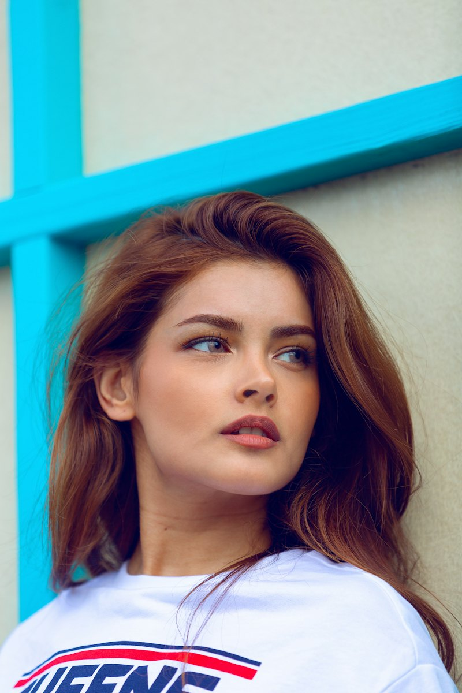

눈매 맞춤 디자인
유행 디자인을 그대로 붙이지 않아요. 눈의 길이와 꼬리 방향에 맞춰 길이를 한 올씩 배치해요.

원장 소개
상담부터 시술, 리터치까지 원장이 직접 맡아요. 담당이 바뀌지 않으니 지난번 디자인과 내 속눈썹 상태를 기억하고 이어서 관리할 수 있어요.
정루미 원장 속눈썹 디자인 9년 차
유행 디자인을 그대로 붙이지 않아요. 눈의 길이와 꼬리 방향에 맞춰 길이를 한 올씩 배치해요.
예민한 분은 시술 전 패치 테스트부터 해요. 냄새와 시림이 적은 글루를 씁니다.
안내한 가닥수를 지키고, 내 속눈썹이 버틸 수 있는 무게만 올려요.
나만의 스타일 찾기
눈매와 원하는 분위기를 고르면 어울리는 디자인을 그려 드려요.
포트폴리오
후기
★★★★★
“처진 눈이라 늘 졸려 보였는데 꼬리를 살짝 올려 주시니 인상이 확 밝아졌어요.”
★★★★★
“눈이 예민해서 매번 따가웠는데 패치 테스트부터 해 주셔서 처음으로 편하게 받았어요.”
★★★★★
“홑꺼풀이라 펌이 안 보일까 걱정했는데 컬을 딱 맞게 잡아 주셨어요. 6주째 유지 중이에요.”
★★★★★
“원장님 혼자 하셔서 늘 같은 디자인으로 받을 수 있는 게 제일 좋아요. 리터치도 꼼꼼해요.”
★★★★★
“스타일 찾기에서 고른 디자인 그대로 해 주셨는데 렌즈 안 껴도 눈이 커 보여요.”
자주 묻는 질문
평균 3~4주예요. 속눈썹이 자라고 빠지는 주기에 따라 달라서, 3주 전후 리터치를 권해 드려요.
6시간 동안은 물이 닿지 않게 해 주세요. 오일 클렌저와 워터프루프 마스카라는 유지 기간을 줄여요.
숱과 길이를 더하고 싶으면 연장, 내 속눈썹을 자연스럽게 올리고 싶으면 래쉬 리프트가 맞아요. 처진 속눈썹은 리프트로도 충분히 올라가요.
저자극 글루를 쓰고, 예민한 분은 시술 2일 전 패치 테스트를 무료로 해 드려요. 눈이 붓거나 가려우면 바로 연락 주세요.
연장은 3~4주, 래쉬 리프트는 6~8주가 적당해요. 4주가 지나면 리터치 대신 새로 시술해요.
네, 위 속눈썹과 함께하면 눈매가 더 또렷해져요. 아래만 단독으로도 가능해요.
예약 안내
첫 방문은 눈매 상담과 디자인 확인을 위해 20분이 더 걸려요. 예민한 분은 패치 테스트를 먼저 예약해 주세요.
네이버 예약으로 첫 방문 예약 패치 테스트만 예약지난번 디자인을 기록해 두고 있어요. 원하는 날짜만 카카오톡으로 남겨 주시면 가장 빠르게 잡아 드려요.
카카오톡으로 리터치 예약 전화 010-1234-5678오시는 길